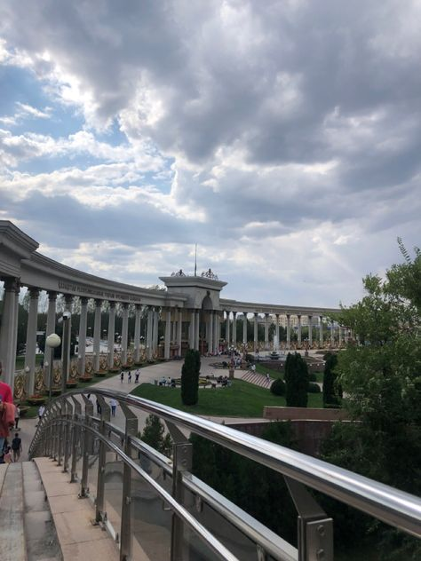

Presidential Park – Almaty's Green Oasis
Presidential Park is one of the largest and most beautiful parks in Almaty, located at the foothills of the Zailiyskiy Alatau mountains. It’s a perfect place for walking, relaxing outdoors, and enjoying scenic views of the city and mountains.
- Area: 73 hectares
- Opened: 2011
- Features: fountains, alleys, flower beds
What to See?
- 🌊 Main fountain – a central composition with cascading water
- 🌳 Alleys and landscape design – beautiful walking zones
- 📸 Viewing platform – stunning views of Almaty and the mountains
- 🡠Relaxation areas – benches, gazebos, and photo spots
What to Do?
- 🚶‍♂ Walks and photo sessions – ideal for peaceful leisure
- 🚴‍♂ Biking – spacious paths for active recreation
- 👨‍👩‍👧‍👦 Family time – kids' zones and picnic spots
- 🌅 Sunrise or sunset watching – breathtaking views
How to Get There?
📠Address: Al-Farabi Avenue, 42, Almaty
🚕 Taxi: 10–15 minutes from the city center
🚌 Buses: routes running along Al-Farabi Avenue
Opening Hours & Admission:
🕒 Open: 24/7
💰 Admission: Free
Presidential Park is the perfect spot for quiet rest, walks, and enjoying the nature of Almaty! 🌳🏞✨
PHOTOS

